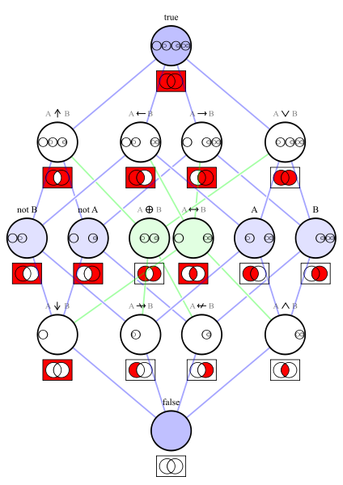

Алгебра логики
Алгебра логики - раздел математической логики, в котором изучаются логические операции над высказываниями. Чаще всего предполагается, что высказывания могут быть только истинными или ложными, то есть используется так называемая бинарная или двоичная логика, в отличие от, например, троичной логики.
Определения
Базовыми элементами, которыми оперирует алгебра логики, являются высказывания.
Высказывания строятся над множеством:
$${B=\{\lnot,\wedge,\lor,0,1\}}$$где:
$${\lnot\ } - отрицание$$ $${\wedge\ } - конъюнкция$$ $${\lor\ } - дизъюнкция$$ $${0 и 1\ } - константы$$ 